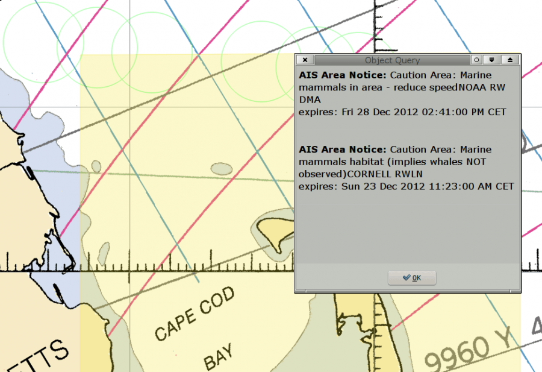

To display the messages, tick the Options→Ships→AIS Targets→Show area notices(from AIS binary messages).
Many countries around the maritime world are testing the AIS binary messages. Expect a lot of development in this area.
In OpenCPN, this is very much a work in progress, the areas were only added April 2012 and the messages in December 2012.
Areas and the messages included for each area, are available. In the US, Cape Cod is transmitting experimental Right Whale information. For testing, copy vislab-ccom.unh.edu/ais/notices.aivdm into a text file and point the VDR (Voyage Data Recording) plugin to this file. These messages are updated quite often.

The area messages are found as the first entries in a normal object query for vectorcharts. The easiest way to display this dialog is to just double click in an area. The screen picture above shows that this works for RNC:s (raster charts) as well as ENC:s (vector charts). The first notice above is for the yellow tinted rectangular area while he second notice is for one of the circles outlined in green.
An overview of available massages compiled by IALA. IALA has agreed to maintain a collection of regional applications for the AIS Application Specific Messages that are in use. The intent is to provide an overview to all interested parties of what currently exists. The overview of available messages is available here**.